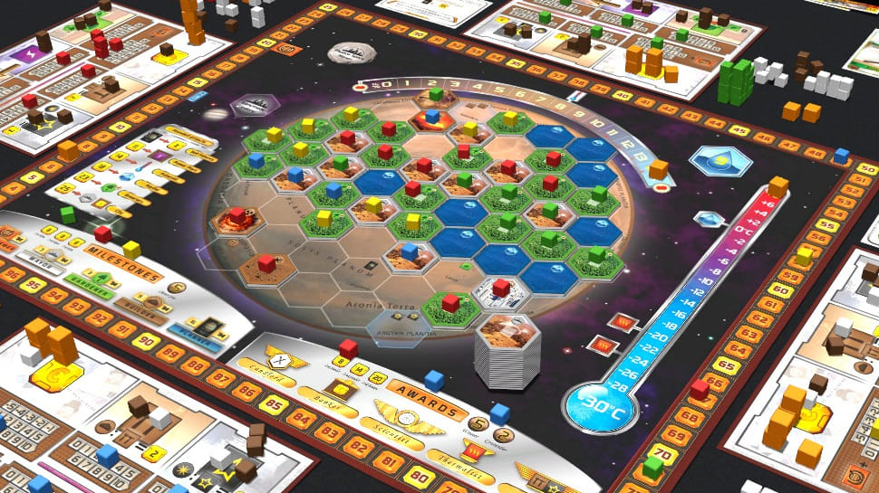
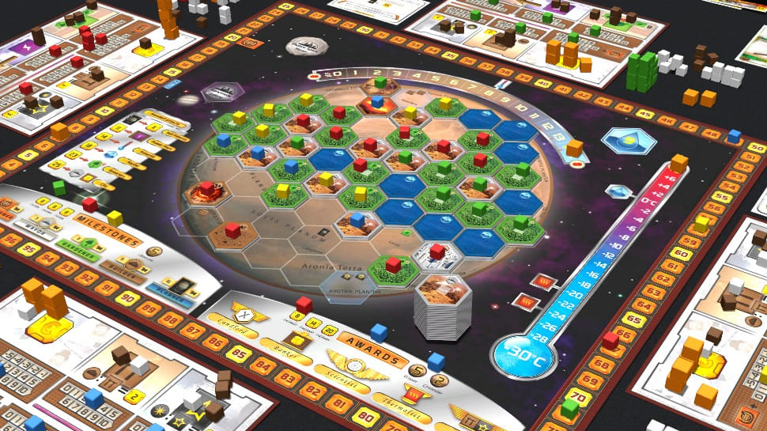

Rollespill
Denne formen for rollespill kalles også penn & papir, bordrollespill eller verbale rollespill. I stedet for å fysisk spille ut rollenes handlinger skildrer man dem for hverandre muntlig. Å spille slik krever stort sett en game master som skildrer miljøet og birollenes handlinger for spillerne. Det man gjør: Man samler en gjeng og finner et rollespill alle kunne tenke seg å spille. Deretter finner spillerne ut hva slags rolle de kunne tenke seg å spille, og noterer eventuelt ned informasjon om rollen. Så er det bare å sette i gang og teste sin fantasi, i en verden der hell i terninger kan avgjøre det meste.
Rollespill har ofte regler for hvordan man lager roller, hvordan man bygger opp og løser konflikter i fiksjonen, hvordan roller utvikler seg, og hvordan man skaper spennende situasjoner og eventyr.
Kjente rollespill Disse rollespillene er blant de mest kjente og spilte internasjonalt:
 
